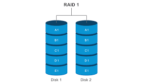
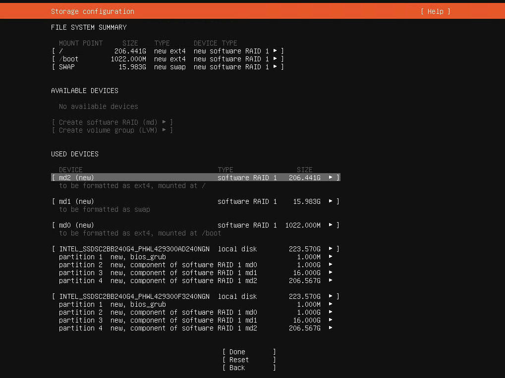

Project Overview
This project focuses on implementing RAID in Linux using mdadm to improve storage redundancy and availability. The goal was to simulate a real-world scenario where disk failures must not interrupt system operation.

Steps Performed
- Created virtual disks and partitions using fdisk
- Assembled RAID using mdadm
- Formatted and mounted the RAID array
- Simulated disk failure and verified auto-recovery
- Configured RAID persistence in /etc/mdadm/mdadm.conf

Final Result
The RAID system is fully functional, resilient to disk failures, and capable of rebuilding automatically. This setup significantly improves data availability.